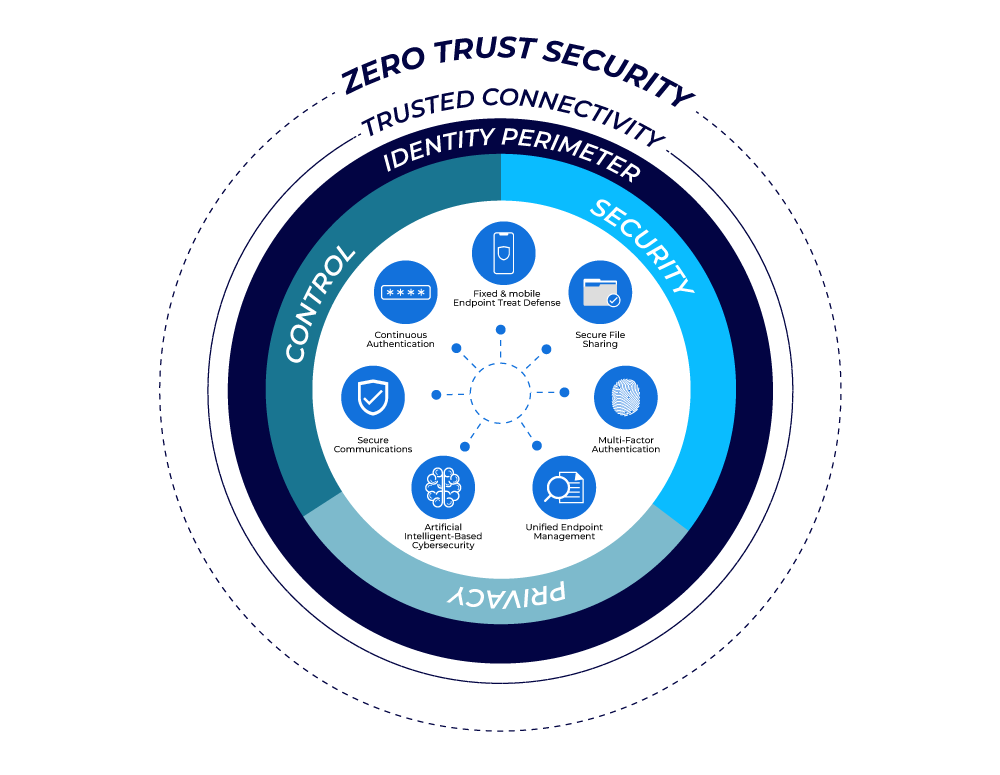

The Zero Trust Model, also known as Zero Trust Security or Zero Trust Network, is a cybersecurity approach and framework that challenges the traditional network security model that relies on perimeter-based defenses. Zero Trust is built on the premise that organizations should not automatically trust any user or system, both inside and outside their network, and should continuously verify and validate trust in a granular and dynamic manner. In essence, Zero Trust assumes that threats can exist both inside and outside the traditional network perimeter and focuses on securing resources and data based on the principle of “never trust, always verify.“
Enhanced Security Posture:
Zero Trust fundamentally changes the approach to cybersecurity by removing the assumption of trust both inside and outside the network. This leads to a more robust and proactive security posture.
Reduced Attack Surface:
Zero Trust minimizes the attack surface by limiting access to resources, applications, and data to only those users and devices that have a legitimate need. This reduces the potential entry points for attackers.
Improved Data Protection:
By focusing on identity and data protection, Zero Trust helps safeguard sensitive information and ensures that data is accessible only by authorized users.
Mitigation of Insider Threats:
Zero Trust recognizes that threats can originate from within the organization. Continuous monitoring and behavior analysis help detect and mitigate insider threats.
Flexible and Secure Remote Work:
The model is well-suited for remote work scenarios, allowing employees to access corporate resources securely from anywhere while maintaining strong access controls.
Assessment and Planning:
Security Assessment:
Conduct a thorough security assessment to understand your organization’s current security posture, including network architecture, data flows, and access control.
Identify Critical Assets:
Identify and prioritize critical assets, applications, and data that require the highest level of protection.
Stakeholder Involvement:
Involve key stakeholders from various departments, including IT, security, and compliance, to collaborate on the Zero Trust strategy.
Create Zero Trust Policies:
Develop clear and well-defined Zero Trust policies that specify who has access to what resources and under what conditions.
Data Classification:
Classify and label data based on sensitivity to determine access requirements and encryption needs.
User and Device Identities:
Establish a comprehensive system for user and device identity management, including multi-factor authentication (MFA) and identity verification.
Micro-Segmentation:
Implement micro-segmentation to segment the network into smaller, isolated zones and control traffic between them.
Isolation of Sensitive Data:
Isolate sensitive data in separate segments with strict access controls.
User and Entity Behavior Analytics (UEBA):
Implement UEBA tools to continuously monitor user and entity behavior and detect anomalies.
Continuous Assessment:
Continuously assess the security posture of devices and users to identify potential risks or breaches.
Least Privilege Access:
Restrict user and device access to resources to the minimum level necessary to perform their roles.
Conditional Access:
Implement conditional access policies based on contextual factors such as user location, device health, and time of access.